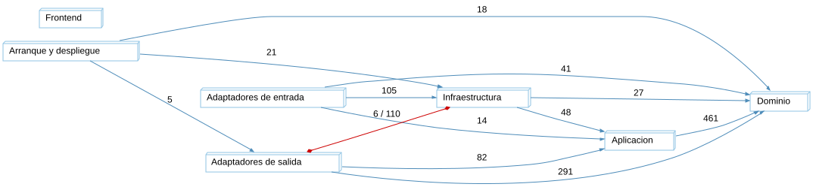

Understand 8.1.1269 · main 67d9db2 · corte 27/11/2026.
Vista derivada de la API real de Understand; los reportes nativos se conservan por separado. 149 archivos propios · 6.719 líneas de código · 141 clases · 696 funciones · complejidad máxima 26.
Interpretación, alcance y limitaciones · Resumen JSON · CSV nativo · Funciones · Clases · Dependencias
0 errores y 224 advertencias de resolución documentadas. N/D significa métrica no disponible. Halstead original no está normalizado a 0–100. SonargraphMaintainability (ML2) nativo: 84,44774960712785; no es un porcentaje de calidad institucional.

Grafo completo · Reglas verificadas y límites
Complejidad · Líneas · Clases · Mantenibilidad de funciones · Mantenibilidad de clases · Acoplamiento de control · Acoplamiento de datos
El reporte nativo de complejidad enlaza detalles por archivo que esta exportación de SciTools no genera. Las tablas por capa sí están disponibles; para el detalle completo usar los CSV y esta tabla. Se registra esta limitación sin alterar los originales.
| archivo | CountLineCode | CountDeclClass | CountDeclFunction | MaxCyclomatic | HalsteadMaintainIdx | DirectFanIn | DirectFanOut |
|---|---|---|---|---|---|---|---|
| deploy/preflight.py | 33 | 0 | 1 | 11 | 83.00064973452783 | 1 | 1 |
| deploy/start.py | 10 | 0 | 1 | 2 | 126.90267013392713 | 1 | 1 |
| index.html | 0 | 0 | 0 | 0 | 0.0 | 1 | 1 |
| src/adapters/in/controllers/auth_controller.py | 75 | 1 | 7 | 6 | 67.4325974041598 | 1 | 3 |
| src/adapters/in/controllers/catalogo_controller.py | 19 | 0 | 4 | 1 | 85.31969344299692 | 1 | 4 |
| src/adapters/in/controllers/documento_controller.py | 115 | 6 | 10 | 2 | 45.02339842024362 | 1 | 4 |
| src/adapters/in/controllers/ia_controller.py | 31 | 0 | 4 | 2 | 74.75576064391456 | 1 | 7 |
| src/adapters/in/controllers/informe_controller.py | 30 | 0 | 4 | 2 | 74.5165678830636 | 1 | 5 |
| src/adapters/in/controllers/operacion_controller.py | 16 | 0 | 1 | 3 | 90.17010097075747 | 1 | 6 |
| src/adapters/in/controllers/revision_controller.py | 49 | 3 | 9 | 2 | 62.46420361413974 | 1 | 3 |
| src/adapters/in/controllers/solicitud_controller.py | 44 | 0 | 7 | 1 | 65.94071719523004 | 1 | 7 |
| src/adapters/in/controllers/usuario_controller.py | 20 | 1 | 1 | 1 | 87.66227944505887 | 1 | 5 |
| src/adapters/in/limite_documental.py | 28 | 1 | 3 | 4 | 93.33213600728394 | 1 | 1 |
| src/adapters/in/schemas/base.py | 7 | 2 | 0 | 1 | 110.24335851494214 | 12 | 1 |
| src/adapters/in/schemas/catalogo_response.py | 43 | 4 | 1 | 1 | 72.19358791312447 | 2 | 5 |
| src/adapters/in/schemas/error_response.py | 14 | 1 | 0 | 1 | 96.33994329296144 | 7 | 1 |
| src/adapters/in/schemas/informe_request.py | 12 | 2 | 0 | 0 | 98.37080699707809 | 3 | 2 |
| src/adapters/in/schemas/informe_response.py | 48 | 1 | 1 | 4 | 82.15548163355339 | 4 | 7 |
| src/adapters/in/schemas/prediccion_request.py | 9 | 1 | 0 | 0 | 106.7116323774484 | 2 | 3 |
| src/adapters/in/schemas/prediccion_response.py | 81 | 5 | 2 | 3 | 55.12345596360767 | 2 | 5 |
| src/adapters/in/schemas/seccion_response.py | 5 | 1 | 0 | 0 | 122.66396267723513 | 3 | 2 |
| src/adapters/in/schemas/solicitud_request.py | 40 | 5 | 2 | 4 | 85.08529613323952 | 2 | 3 |
| src/adapters/in/schemas/solicitud_response.py | 24 | 2 | 0 | 0 | 87.01596370398559 | 2 | 3 |
| src/adapters/in/web/App.jsx | 39 | 0 | 3 | 1 | 74.29967307734321 | 2 | 11 |
| src/adapters/in/web/components/DocumentosInforme.jsx | 116 | 0 | 32 | 5 | 28.10610574291428 | 3 | 4 |
| src/adapters/in/web/components/EditorBorrador.jsx | 29 | 0 | 9 | 7 | 70.40672291309721 | 2 | 3 |
| src/adapters/in/web/components/EncabezadoDocumento.jsx | 18 | 0 | 4 | 3 | 80.8338398194134 | 4 | 2 |
| src/adapters/in/web/components/EstadoAcceso.jsx | 21 | 1 | 4 | 3 | 101.40659923441439 | 3 | 1 |
| src/adapters/in/web/components/FuentesInforme.jsx | 39 | 0 | 9 | 5 | 63.20890085822567 | 4 | 3 |
| src/adapters/in/web/components/Header.jsx | 32 | 0 | 2 | 2 | 77.88549167205561 | 2 | 3 |
| src/adapters/in/web/components/NormativasSugeridas.jsx | 38 | 0 | 8 | 2 | 64.96056041191349 | 2 | 1 |
| src/adapters/in/web/components/PasosInforme.jsx | 24 | 0 | 3 | 9 | 78.612195843884 | 2 | 1 |
| src/adapters/in/web/components/ProtectedRoute.jsx | 45 | 0 | 9 | 5 | 65.73617514538175 | 2 | 6 |
| src/adapters/in/web/components/VistaPreviaInforme.jsx | 22 | 0 | 2 | 1 | 80.02111956164438 | 2 | 5 |
| src/adapters/in/web/layouts/MainLayout.jsx | 36 | 0 | 4 | 2 | 73.29263837393749 | 2 | 2 |
| src/adapters/in/web/main.jsx | 11 | 0 | 0 | 1 | 103.9454927441879 | 1 | 2 |
| src/adapters/in/web/pages/Documentos.jsx | 10 | 0 | 1 | 1 | 102.35778199816811 | 2 | 4 |
| src/adapters/in/web/pages/Login.jsx | 126 | 0 | 13 | 8 | 45.644332021016275 | 2 | 5 |
| src/adapters/in/web/pages/NuevoInforme.jsx | 621 | 0 | 104 | 18 | -55.42002329987412 | 2 | 18 |
| src/adapters/in/web/pages/RevisionInformes.jsx | 119 | 0 | 56 | 2 | 20.11962610694117 | 2 | 6 |
| src/adapters/in/web/services/api.js | 65 | 0 | 5 | 6 | 70.12411916610753 | 14 | 2 |
| src/adapters/in/web/services/authService.js | 82 | 0 | 9 | 3 | 69.93897328121375 | 8 | 3 |
| src/adapters/in/web/services/cargarFormulario.js | 1 | 0 | 1 | 1 | 263.20702841599945 | 4 | 2 |
| src/adapters/in/web/services/catalogoService.js | 24 | 0 | 4 | 1 | 84.0671615787837 | 2 | 2 |
| src/adapters/in/web/services/documentoService.js | 33 | 0 | 6 | 4 | 86.68261098434766 | 3 | 2 |
| src/adapters/in/web/services/encabezadoDocumento.js | 29 | 0 | 8 | 2 | 72.61609821677055 | 4 | 1 |
| src/adapters/in/web/services/estructuraBorrador.js | 34 | 0 | 8 | 4 | 88.14512847909319 | 4 | 1 |
| src/adapters/in/web/services/flujoInforme.js | 65 | 0 | 22 | 7 | 64.83207671329257 | 4 | 1 |
| src/adapters/in/web/services/iaService.js | 28 | 0 | 4 | 1 | 80.20783383227429 | 2 | 3 |
| src/adapters/in/web/services/informeService.js | 50 | 0 | 7 | 4 | 76.32107771987604 | 2 | 2 |
| src/adapters/in/web/services/progresoInforme.js | 17 | 0 | 3 | 5 | 115.13786977927381 | 2 | 2 |
| src/adapters/in/web/services/session.js | 81 | 0 | 17 | 5 | 68.8405970412948 | 5 | 1 |
| src/adapters/in/web/services/solicitudService.js | 31 | 0 | 5 | 2 | 78.10217572533418 | 2 | 2 |
| src/adapters/in/web/styles/acceso.css | 0 | 0 | 0 | 0 | 0.0 | 2 | 1 |
| src/adapters/in/web/styles/app.css | 0 | 0 | 0 | 0 | 0.0 | 2 | 1 |
| src/adapters/in/web/styles/identidad.css | 0 | 0 | 0 | 0 | 0.0 | 2 | 1 |
| src/adapters/in/web/styles/nuevoInforme.css | 0 | 0 | 0 | 0 | 0.0 | 3 | 1 |
| src/adapters/in/web/styles/revision.css | 0 | 0 | 0 | 0 | 0.0 | 2 | 1 |
| src/adapters/out/ai/context_predictor_catalogo.py | 76 | 1 | 3 | 15 | 71.08256577252834 | 2 | 6 |
| src/adapters/out/ai/context_predictor_mock.py | 15 | 1 | 1 | 1 | 113.04028214609339 | 1 | 5 |
| src/adapters/out/ai/embeddings_ollama.py | 30 | 1 | 2 | 6 | 74.89237561738057 | 2 | 2 |
| src/adapters/out/ai/fidelidad_inspeccion.py | 71 | 0 | 4 | 20 | 78.80011656709878 | 2 | 2 |
| src/adapters/out/ai/generador_borrador_mock.py | 17 | 1 | 1 | 4 | 88.65412262259312 | 1 | 4 |
| src/adapters/out/ai/generador_borrador_ollama.py | 228 | 1 | 4 | 22 | 38.16925492467539 | 2 | 8 |
| src/adapters/out/ai/integridad_modelos.py | 16 | 0 | 1 | 4 | 126.9191936221878 | 2 | 1 |
| src/adapters/out/ai/ollama_adapter.py | 45 | 1 | 4 | 8 | 80.1204552784634 | 3 | 3 |
| src/adapters/out/ai/sklearn_context_predictor.py | 224 | 1 | 4 | 6 | 65.89950815111129 | 2 | 4 |
| src/adapters/out/documents/__init__.py | 0 | 0 | 0 | 0 | 0.0 | 2 | 1 |
| src/adapters/out/documents/almacen_supabase.py | 48 | 1 | 6 | 4 | 73.01176813666889 | 2 | 2 |
| src/adapters/out/documents/exportador_docx.py | 134 | 1 | 3 | 26 | 55.62589650164536 | 3 | 8 |
| src/adapters/out/documents/exportador_mdt.py | 53 | 0 | 1 | 13 | 83.12905742451628 | 2 | 4 |
| src/adapters/out/documents/exportador_pdf.py | 42 | 1 | 2 | 9 | 86.51451108203881 | 2 | 3 |
| src/adapters/out/documents/extractor.py | 58 | 1 | 1 | 18 | 71.67149225858583 | 2 | 2 |
| src/adapters/out/documents/fuentes_docx.py | 16 | 0 | 1 | 6 | 110.10243143703197 | 3 | 1 |
| src/adapters/out/persistence/__init__.py | 0 | 0 | 0 | 0 | 0.0 | 7 | 1 |
| src/adapters/out/persistence/catalogo_repository_memory.py | 35 | 1 | 5 | 2 | 76.65504999537454 | 2 | 3 |
| src/adapters/out/persistence/datos_demo.py | 255 | 0 | 2 | 4 | 61.77055697471497 | 6 | 6 |
| src/adapters/out/persistence/documentos_postgres.py | 73 | 1 | 10 | 4 | 67.23710158676539 | 2 | 7 |
| src/adapters/out/persistence/estado_postgres.py | 5 | 0 | 1 | 1 | 116.34762138567339 | 2 | 2 |
| src/adapters/out/persistence/informe_auditado.py | 21 | 1 | 4 | 4 | 100.32722576252823 | 2 | 3 |
| src/adapters/out/persistence/informe_repository_memory.py | 26 | 1 | 4 | 3 | 78.21342769448901 | 2 | 5 |
| src/adapters/out/persistence/memoria.py | 27 | 1 | 1 | 2 | 80.58431486623203 | 5 | 5 |
| src/adapters/out/persistence/perfil_repository_postgres.py | 25 | 1 | 2 | 2 | 81.09884886172371 | 2 | 5 |
| src/adapters/out/persistence/plantilla_repository_memory.py | 11 | 1 | 3 | 1 | 98.80760210631416 | 2 | 3 |
| src/adapters/out/persistence/postgres.py | 222 | 8 | 24 | 8 | 35.03580881655632 | 4 | 19 |
| src/adapters/out/persistence/prediccion_repository_memory.py | 17 | 1 | 3 | 1 | 88.91618417718055 | 2 | 4 |
| src/adapters/out/persistence/revision_memory.py | 28 | 1 | 5 | 3 | 74.81526435730426 | 2 | 3 |
| src/adapters/out/persistence/revision_postgres.py | 23 | 1 | 5 | 1 | 80.59506160341425 | 2 | 4 |
| src/adapters/out/persistence/solicitud_repository_memory.py | 16 | 1 | 3 | 2 | 90.224101030657 | 2 | 4 |
| src/adapters/out/persistence/sql_resources.py | 6 | 0 | 1 | 1 | 157.2641219298298 | 6 | 1 |
| src/application/ports/input/solicitud_use_case.py | 16 | 2 | 1 | 1 | 93.21772657546516 | 3 | 3 |
| src/application/ports/output/catalogo_repository.py | 13 | 1 | 4 | 1 | 117.71663804270655 | 6 | 3 |
| src/application/ports/output/context_predictor.py | 6 | 1 | 1 | 1 | 113.72686154505655 | 5 | 2 |
| src/application/ports/output/documentos.py | 21 | 5 | 13 | 1 | 80.61855601383525 | 2 | 1 |
| src/application/ports/output/exportador_informe.py | 6 | 1 | 1 | 1 | 146.2352325609155 | 3 | 2 |
| src/application/ports/output/generador_borrador.py | 32 | 4 | 1 | 1 | 112.3368911392509 | 4 | 2 |
| src/application/ports/output/informe_repository.py | 11 | 1 | 3 | 1 | 123.81831991239929 | 7 | 2 |
| src/application/ports/output/llm_port.py | 9 | 1 | 2 | 1 | 164.8202823940141 | 2 | 1 |
| src/application/ports/output/perfil_repository.py | 6 | 1 | 1 | 1 | 145.67611337156129 | 2 | 2 |
| src/application/ports/output/plantilla_repository.py | 8 | 1 | 2 | 1 | 107.37852191780425 | 5 | 2 |
| src/application/ports/output/prediccion_repository.py | 9 | 1 | 2 | 1 | 131.222146253526 | 4 | 2 |
| src/application/ports/output/revision_repository.py | 10 | 1 | 4 | 1 | 127.2309514181818 | 3 | 1 |
| src/application/ports/output/solicitud_repository.py | 11 | 1 | 2 | 1 | 125.43835671446146 | 4 | 2 |
| src/application/ports/output/unidad_trabajo.py | 6 | 1 | 1 | 1 | 180.30377316215518 | 4 | 1 |
| src/application/use_cases/actualizar_borrador.py | 53 | 1 | 2 | 9 | 71.50605436073978 | 2 | 13 |
| src/application/use_cases/actualizar_solicitud.py | 40 | 1 | 2 | 9 | 67.48918619926312 | 3 | 7 |
| src/application/use_cases/consultar_catalogos.py | 25 | 1 | 5 | 2 | 78.64149306621884 | 2 | 6 |
| src/application/use_cases/crear_solicitud.py | 17 | 1 | 2 | 2 | 88.97201457655885 | 3 | 5 |
| src/application/use_cases/documentos.py | 183 | 1 | 12 | 11 | 31.02956191896454 | 5 | 7 |
| src/application/use_cases/exportar_informe.py | 13 | 1 | 3 | 2 | 125.80027424868672 | 4 | 2 |
| src/application/use_cases/generar_borrador.py | 158 | 1 | 9 | 12 | 49.988085018142314 | 2 | 16 |
| src/application/use_cases/guardar_solicitud_completa.py | 22 | 1 | 2 | 3 | 100.92432846697827 | 2 | 6 |
| src/application/use_cases/guardar_valores_solicitud.py | 27 | 1 | 2 | 3 | 93.78388818620468 | 3 | 6 |
| src/application/use_cases/obtener_contexto.py | 7 | 1 | 2 | 1 | 110.59662678048713 | 2 | 1 |
| src/application/use_cases/obtener_informe.py | 34 | 1 | 4 | 5 | 73.10634694229975 | 3 | 5 |
| src/application/use_cases/obtener_solicitud.py | 8 | 1 | 2 | 1 | 107.0076158151432 | 2 | 3 |
| src/application/use_cases/predecir_contexto.py | 43 | 1 | 2 | 7 | 64.07930307349713 | 2 | 8 |
| src/application/use_cases/revision_informes.py | 135 | 1 | 11 | 7 | 40.655210174984944 | 2 | 10 |
| src/application/use_cases/servicios_solicitud.py | 76 | 1 | 6 | 9 | 62.977379555095844 | 15 | 12 |
| src/application/use_cases/validar_prediccion.py | 60 | 1 | 2 | 17 | 69.14273949566402 | 2 | 8 |
| src/application/use_cases/verificar_referencias_normativas.py | 13 | 0 | 1 | 4 | 114.92119290877322 | 3 | 2 |
| src/domain/entities/catalogo.py | 30 | 3 | 0 | 0 | 81.44298543818354 | 5 | 1 |
| src/domain/entities/correspondencia_normativa.py | 45 | 1 | 3 | 2 | 72.15581111094252 | 3 | 2 |
| src/domain/entities/documento.py | 32 | 1 | 1 | 1 | 89.5414805341602 | 3 | 3 |
| src/domain/entities/informe.py | 33 | 2 | 0 | 0 | 96.61816618056291 | 10 | 4 |
| src/domain/entities/plantilla.py | 28 | 2 | 0 | 0 | 108.06074910686645 | 9 | 3 |
| src/domain/entities/prediccion_contexto.py | 29 | 2 | 0 | 0 | 80.42265501244833 | 10 | 3 |
| src/domain/entities/solicitud.py | 28 | 2 | 1 | 1 | 80.92105828620494 | 20 | 2 |
| src/domain/entities/usuario_actual.py | 14 | 1 | 0 | 0 | 96.8305085639505 | 17 | 2 |
| src/domain/services/errores.py | 26 | 7 | 2 | 2 | 105.55746784576932 | 34 | 1 |
| src/domain/services/informe_service.py | 16 | 0 | 1 | 6 | 89.14725662477865 | 5 | 3 |
| src/domain/services/respaldo.py | 29 | 0 | 2 | 6 | 88.39200991932265 | 2 | 2 |
| src/domain/services/solicitud_service.py | 50 | 1 | 4 | 9 | 71.45995996949793 | 8 | 6 |
| src/domain/value_objects/encabezado_documento.py | 52 | 0 | 5 | 10 | 78.46675166068754 | 5 | 2 |
| src/domain/value_objects/estado_solicitud.py | 7 | 1 | 0 | 0 | 114.83889731997564 | 10 | 1 |
| src/domain/value_objects/estados.py | 30 | 5 | 0 | 0 | 82.11362423885927 | 30 | 1 |
| src/domain/value_objects/estructura_piloto.py | 9 | 0 | 1 | 1 | 132.6532736161724 | 2 | 2 |
| src/domain/value_objects/fuentes_piloto.py | 27 | 0 | 1 | 1 | 95.96689520415134 | 2 | 3 |
| src/domain/value_objects/seccion_salida.py | 43 | 1 | 5 | 5 | 82.24884386446297 | 14 | 2 |
| src/infrastructure/auth/mock.py | 12 | 0 | 1 | 1 | 116.92409359562414 | 2 | 5 |
| src/infrastructure/auth/supabase.py | 95 | 3 | 9 | 8 | 59.93490358300861 | 3 | 2 |
| src/infrastructure/configuration/container.py | 146 | 1 | 1 | 11 | 47.88831403613567 | 3 | 42 |
| src/infrastructure/configuration/database.py | 68 | 1 | 4 | 6 | 75.78625982526717 | 5 | 1 |
| src/infrastructure/configuration/rag.py | 52 | 1 | 3 | 8 | 60.468787223743334 | 2 | 1 |
| src/infrastructure/configuration/settings.py | 57 | 1 | 2 | 6 | 56.86439912139252 | 3 | 3 |
| src/infrastructure/dependencies.py | 28 | 0 | 2 | 6 | 75.32756670069874 | 9 | 3 |
| src/infrastructure/diagnostico.py | 38 | 0 | 1 | 9 | 88.14054843919678 | 2 | 3 |
| src/main.py | 101 | 0 | 8 | 10 | 54.17369010829915 | 1 | 8 |
| vite.config.js | 14 | 0 | 1 | 1 | 98.7220742688205 | 1 | 1 |